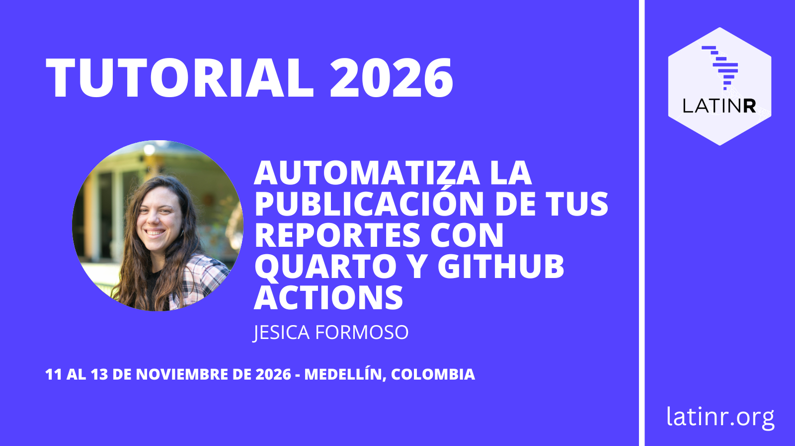
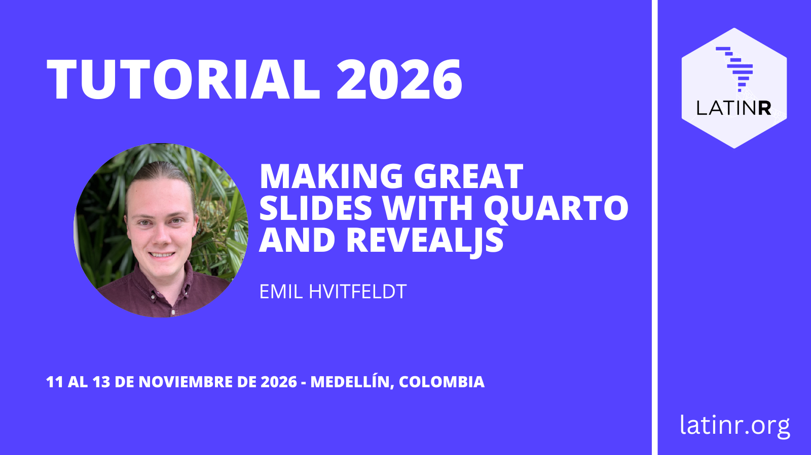
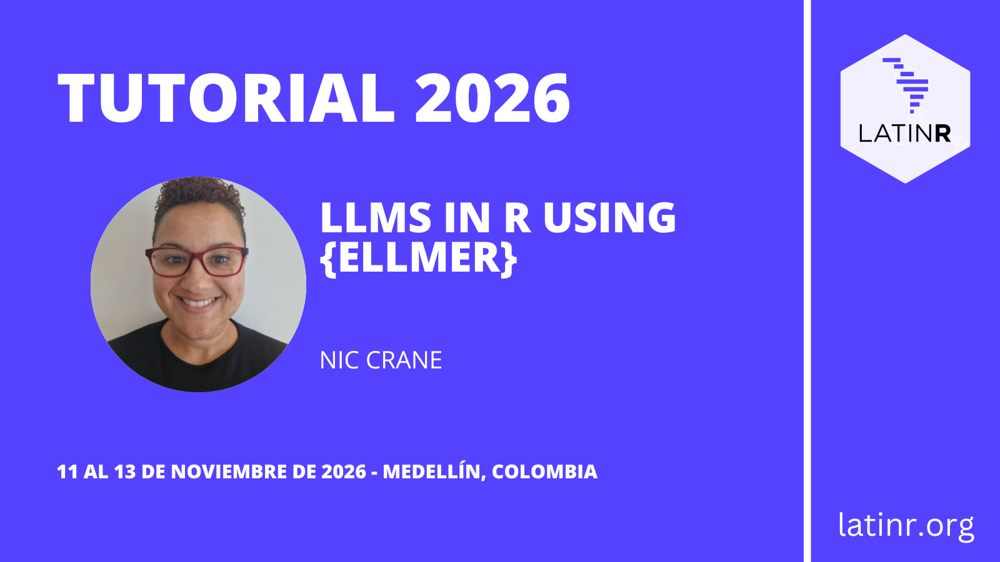
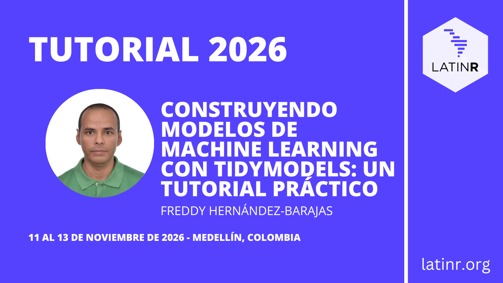
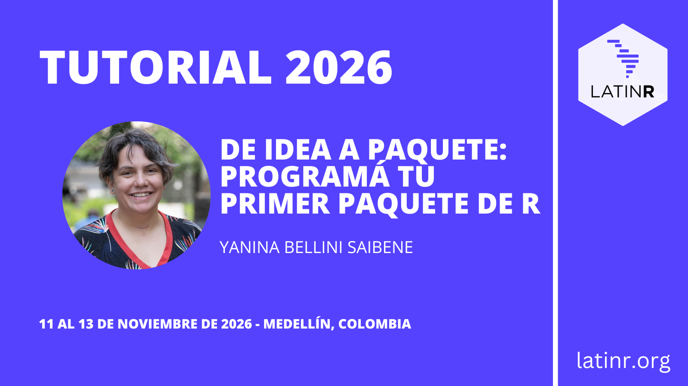
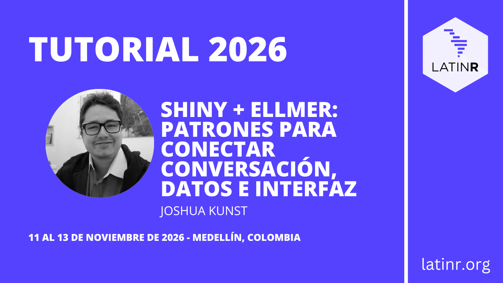

Tutoriais do LatinR 2026
Já vem chegando a nona edição do LatinR! Este ano, além das palestras e sessões de diálogo, teremos uma grande variedade de tutoriais práticos ministrados por especialistas da comunidade R. A seguir, contamos do que vai se tratar cada um deles.
Automatiza a publicação dos seus relatórios com Quarto e GitHub Actions

Idioma: Espanhol
O objetivo do workshop é aprender a automatizar a publicação e atualização de projetos em R e Quarto através de GitHub Actions e GitHub Pages. A partir de um Google Form e um painel em Quarto já preparados, as e os participantes vão configurar um repositório do GitHub e um workflow em YAML para recuperar dados do Google Sheets, processá-los com R, gerar o painel e publicá-lo automaticamente no GitHub Pages em intervalos regulares. É voltado para pessoas que trabalham com R e Quarto ou RMarkdown e buscam melhorar a eficiência, reprodutibilidade, acessibilidade e divulgação de suas análises, relatórios e painéis.
Instrutora: Jesica Formoso
Making great slides with Quarto and revealjs

Idioma: Inglês
Este workshop é totalmente dedicado a criar ótimos slides no Quarto! Não é necessário ser especialista em Quarto para participar, mas ter algum conhecimento básico ajudará. Começaremos pelo básico da criação de uma apresentação de slides no Quarto usando o formato de saída revealjs e avançaremos por diversas dicas e truques para ajudar você a aproveitar ao máximo sua experiência de criação de slides. Abordaremos desde estilo e temas até a melhor forma de posicionar elementos nos seus slides para obter o melhor resultado.
Instrutor: Emil Hvitfeldt
LLMs in R using {ellmer}

Idioma: Inglês
Neste workshop vamos explorar o uso programático de LLMs em R com ellmer. Veremos os principais conceitos a entender, e você vai aprender a se conectar a APIs de LLMs, a extrair dados estruturados a partir de texto não estruturado, e a permitir que os LLMs chamem funções em R e acessem fontes externas para obter resultados mais confiáveis.
Instrutor: Nic Crane
Construindo modelos de Machine Learning com tidymodels: um tutorial prático

Idioma: Espanhol
Este é um workshop prático que apresenta, passo a passo, o fluxo de trabalho para construir modelos de Machine Learning em R utilizando o tidymodels. Serão exploradas algumas das principais ferramentas do ecossistema para trabalhar com dados, definir modelos e organizar um processo de modelagem reprodutível. Por meio de exemplos aplicados, serão revisadas as diferentes etapas do processo, desde a preparação dos dados até a avaliação do desempenho dos modelos, buscando oferecer uma visão geral e prática das possibilidades que o tidymodels oferece para o desenvolvimento de modelos de Machine Learning em R.
Instrutor: Freddy Hernández-Barajas
De idea a paquete: programá tu primer paquete de R

Idioma: Espanhol
Neste workshop prático você vai aprender a transformar uma ideia em um pacote de R, percorrendo as principais etapas do processo de desenvolvimento: organização do projeto, programação, documentação, testes e publicação. Também discutiremos o uso de IA (GitHub Copilot) como assistente durante o desenvolvimento do seu pacote.
Instrutora: Yanina Bellini Saibene
Shiny + ellmer: padrões para conectar conversa, dados e interface

Idioma: Espanhol
Este é um workshop prático que percorre, passo a passo, diferentes formas de incorporar modelos de linguagem em uma aplicação Shiny usando ellmer. Partiremos de uma aplicação simples e adicionaremos conversa, acesso controlado a dados, consultas SQL, atualização do estado e ações sobre a interface, finalizando com um dashboard conversacional que controla gráficos, tabelas e mapas.
Cada padrão é apresentado como uma aplicação independente que muda uma única ideia em relação à anterior. Isso permite identificar claramente qual código habilita cada padrão, quando ele é útil e quais validações ele necessita. O objetivo não é substituir a interface tradicional por um chat, mas entender como ambas as formas de interação podem se complementar.
Instrutor: Joshua Kunst
Você pode encontrar todas as informações sobre os tutoriais na página de tutoriais do site da conferência.
Inscrição
Para se inscrever nos tutoriais, você pode se registrar através do Eventbrite.
Preços de inscrição nos tutoriais (em dólares americanos, por tutorial)
| Preço | |
|---|---|
| Estudante | US$25 |
| Acadêmico/a | US$35 |
| Indústria | US$50 |
🎉 Aproveite o preço early bird (inscrição antecipada)! Se você se inscrever na conferência antes de 4 de outubro, terá um desconto no preço do ingresso.
Você pode encontrar todos os detalhes sobre os preços de inscrição, incluindo os valores de inscrição antecipada e regular da conferência, em nosso post de inscrição.